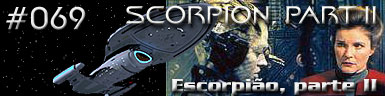
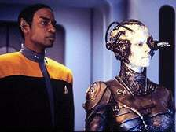
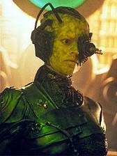
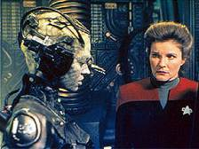
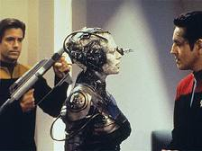
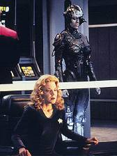
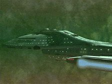
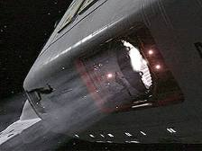

|
Voyager
Temporada 4

Análise do episódio por
Daniel
Sasaki


|

| MANCHETE
DO EPISÓDIO Data Estelar: 51003.7 Janeway chega a um acordo com a Coletividade. Ela concorda em permanecer a bordo do cubo para desenvolver uma arma contra a Espécie 8472, desde que a Voyager seja escoltada em segurança pelo território Borg. Ela ordena que Tuvok se transporte para as suas coordenadas para assisti-la. Quando os zangões tentam instalar neuro-transmissores temporários nos dois, ela insiste que um representante seja designado para se comunicar verbalmente. Os Borgs escolhem Seven of Nine, uma zangão humana há muito assimilada. A tripulação descobre que a Espécie 8472 e suas bio-naves são constituídas do mesmo material orgânico, sendo, assim, ambas suscetíveis à ação das nano-sondas modificadas. Eles planejam um sistema de dispersão em larga escala utilizando os torpedos fotônicos da Voyager. Enquanto isso, na Enfermaria, o Doutor testa com sucesso o seu experimento em Harry. Mas os planos são rapidamente ameaçados. Diante do ataque iminente de uma bio-nave, os Borgs transportam sua representante, alguns zangões e os oficiais para Voyager, e o cubo traça uma rota de colisão contra os inimigos, destruindo-os.Janeway se fere gravemente no ataque e Chakotay tem de assumir o comando. Apesar da ordem para que ele mantenha a aliança com os Borgs, o primeiro-oficial rejeita o pedido de Seven of Nine, de que a Voyager adentre ainda mais em território hostil, em direção ao cubo mais próximo. Chakotay decide entregar a tecnologia aos Borgs e deixá-los em um planeta habitável, optando por desfazer o acordo.  Seven of Nine e os outros zangões tomam o controle da Voyager, abrem uma fenda interdimensional e levam a nave ao domínio da Espécie 8472. A tripulação descobre que foi a Coletividade que iniciou o conflito e, apesar de seu poder, foi incapaz de antever a forte resistência dos alienígenas. Nesse meio-tempo, Janeway se recupera e reassume o comando. Chakotay sai de cena e os oficiais se preparam para um confronto inevitável.Quando as bio-naves chegam, a Voyager dispara os torpedos modificados com nano-sondas, forçando a recuada da Espécie 8472. A nova ameaça parece neutralizada, mas, antes que se comemore a vitória, Seven of Nine avisa que a aliança terminou e os tripulantes serão assimilados à Coletividade Borg. Tendo antecipado essa atitude, Janeway e Chakotay acionam um plano para desligar a zangão da mente coletiva. Por fim, sentindo-se responsável pelo destino da nova passageira, a capitã decide mantê-la a bordo, na esperança de que a humanidade da nova passageira possa ser recuperada.
 Os roteiristas tiveram uma grande responsabilidade nas mãos. Não apenas por "Scorpion" ser um episódio duplo, mas também um cliffhanger e, o mais importante, um que deixou o telespectador na ponta da cadeira. A primeira parte foi muito bem recebida pelos fãs e a crítica, o que deixou a comunidade trekker um tanto preocupada, dado o longo histórico de "Partes II" fracas. Além disso, havia a pressão maior: a introdução de uma nova personagem fixa na série. Como combinar tudo isso com êxito?Tarefa difícil, mas eles conseguiram. Parece que na trilogia "Scorpion", "Scorpion, Part II" e "The Gift" a produção de Voyager finalmente encarnou o clima que deveria ter predominado no Quadrante Delta após o piloto do seriado. A USS Voyager está em apuros, enfrenta o seu dilema maior. A situação pesa na mente da capitã e ela finalmente encara com realismo as precárias condições da viagem para casa. O livro de regras da Federação voa pela janela. Há conflito humano, drama, suspense, tensão, medo. Os ingredientes mais importantes para preparar ficção-científica da melhor qualidade.  Com isso não se quer dizer que o episódio foi impecável. Houve problemas, sim, e ele não chega à altura do anterior, mas isso em nada desmerece a história. Ao telespectador distraído, animado com o dinamismo, as batalhas, os efeitos especiais, "Scorpion, Part II" chega perto da perfeição. Mas quem acompanha a saga com mais cuidado fica, no mínimo, inquieto com algumas decisões de Janeway, sobretudo em relação à aliança com os Borgs.Não apenas ela viola de pleno os termos da Primeira Diretriz, como o faz com a raça mais temida e odiada pela Federação. Chakotay intervém apropriadamente no final da primeira parte, ao dizer que a obstinação da capitã em levar sua tripulação para casa começou a cegá-la. Parece que após três anos de constantes ataques, hostilidade e perigos, Janeway de certa forma passou a encarar sua missão com muito mais subjetividade e protecionismo. Interiorizou-a. Aparentemente, agora ela não se importa com o resto do quadrante. Se chegar em segurança à Terra significa fazer um acordo com os Borgs e auxiliá-los na guerra contra uma outra espécie, que seja consumado o casamento.  O "apelo ao demônio", assim, intriga. Há quem a julgue por seu posicionamento. Sobre isso, há duas coisas a considerar, uma positiva e a outra negativa. A positiva: Janeway revela-se um ser humano e não apenas um mítico capitão da Frota Estelar, destemido e sempre correto. Aqui, ela é passional, muito mais crível e verossimilhante. A negativa: essa verossimilhança não condiz com a personalidade previamente estabelecida, isto é, tem-se em "Scorpion, Part II" uma "nova" Janeway.Difícil acreditar que todo o conflito com a vilã Seska foi desencadeado pela troca de tecnologia com os Kazons por proteção ("State of Flux"), ou que a tripulação tenha desistido de uma tecnologia que encurtaria muito a viagem porque adquiri-la ia contra as leis locais ("Prime Factors") e agora Janeway defenda uma aliança que certamente culminará na aniquilação de uma raça, à revelia de todas as outras do quadrante. A única interpretação para essa inconsistência é que talvez a capitã da Voyager tenha amadurecido e reavaliado seus conceitos diante da realidade à sua frente.  O ponto forte do roteiro são, sem dúvida, o aprofundamento da relação entre Janeway e Chakotay, e a questão da individualidade versus coletividade. Em alguns momentos - como o da discórdia entre os oficiais - o telespectador se convence das vantagens da mente Borg. É terrível admitir, mas Seven of Nine parece certa ao "diagnosticar" os humanos como seres erráticos, conflitantes e desorganizados. Há muita contradição e o "lógico" Tuvok reforça que foram as mentes individuais humanas que enxergaram uma solução para o impasse por que passavam os Borgs.Sobre Seven of Nine em si, não há muito o que tecer. Ela é uma Borg e foi interpretada como tal por Jeri Ryan. Mas em alguns momentos, a personagem se pareceu demais com a Rainha Borg de "Primeiro Contato". Os roteiristas de Voyager têm a mania de repetir falas e expressões achando que dessa forma estão estabelecendo continuidade. Particularmente, tal concepção não cola. A continuidade se faz pelo ordenamento consistente de fatos e não de um descompromissado uso de linhas de diálogo de impacto. Isto é só um leve aparte que não desmerece a atuação da atriz. Ela conseguiu transmitir a frieza da Coletividade com sucesso.  Quanto aos efeitos especiais, eles foram extraordinários. Os Borgs, a Espécie 8472, as batalhas - tudo lindo. Mas é estranha a resistência da Voyager às armas alienígenas, as quais, no episódio anterior, destruíam planetas inteiros. Em pelo menos dois momentos a nave saiu ilesa: quando acompanhava o cubo em dobra e durante o confronto no domínio da nova raça. Mesmo assim, foram momentos de entretenimento.O final é que decepcionou. Foi muito ingênua a colocação de Janeway ao falar que já fizera a sua parte e agora esperava o cumprimento da palavra dos Borgs. Quer dizer que ela acreditaria e dependeria exclusivamente disso? Outro ponto fraco foi a última seqüência, logo após o desligamento da zangão da mente coletiva. Janeway ordena que Paris trace um curso para fora do espaço Borg. Isso significa que eles deram a meia-volta, conforme sugeria Chakotay? Definitivamente, a Voyager não poderia ter atravessado todo aquele território, o que leva a crer que a tripulação voltou à estaca zero e com uma desvantagem: agora os Borgs sabem de sua presença no Quadrante Delta. É o velho e conhecido reset. Por fim, mas não menos importante, nada se descobriu sobre a intrigante Espécie 8472. Ela figurou como "os alienígenas da semana" e ficou por isso mesmo.
Janeway - "I've reached an agreement
with the Collective. We are going to help them design a weapon against Species
8472. In exchange, they've granted us safe passage through their space." Chakotay
- "Keep all information about the nanoprobes stored in your holomatrix." Janeway - "Do you
have a better idea?" Seven
of Nine - "You are individuals. You are small and you think in small
terms." Janeway
- "You are human, aren't you?" Seven
of Nine - "We must construct and test a prototype now. The risk of attack
has increased." Chakotay
- "I'm not turning this ship around. It's too dangerous." Seven of Nine -
"When your Captain first approached us we suspected that an agreement with
humans would prove impossible to mantain. You are erratic, conflicted, disorganized.
Every decision is debated, every action questioned, every individual entitled
to their own small opinion. You lack harmony, cohesion, greatness. It will be
your undoing." Chakotay
- What's the matter? Our galaxy wasn't big enough for you? You had to conquer
new territory. But this race fought back. A species as malevolent as your own." Janeway
- "You never trusted me, you never believed this would work, you were just
waiting for an opportunity to circumvent my orders". Seven
of Nine - "This alliance is terminated. This ship and its crew will adapt
to service us. Resistance is futile."
Roteiro
de Brannon Braga e Joe Menosky Elenco: Kate
Mulgrew como Kathryn Janeway Elenco
convidado: |